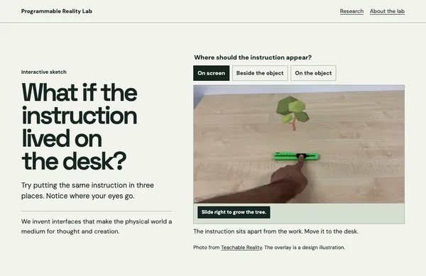
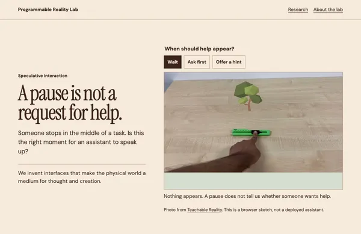
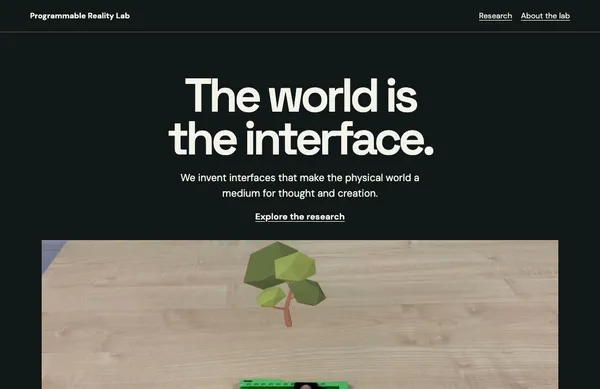
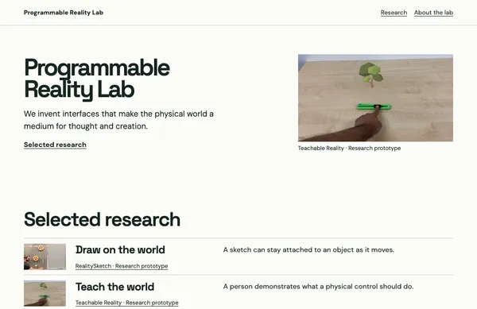

A programmable desk
Move one instruction out of the screen.
Compare an interactive desk, a choice about when help arrives, a photo-led introduction, and a quiet research home. The research examples stay the same.

Move one instruction out of the screen.

Choose when an assistant should intervene.

One image puts the proposition on stage.

The same material with no interactive hero.